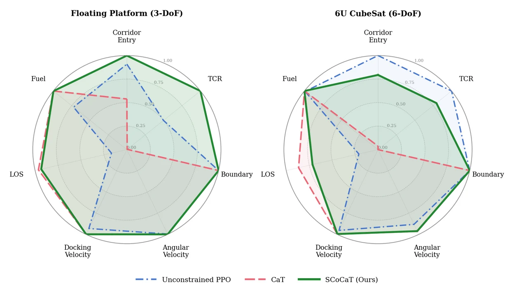

Success Conditioned Constrained Reinforcement Learning for Spacecraft Docking · CoRL 2026 Spotlight
In docking, the goal sits inside the region where safety constraints tighten. There, termination-based constrained RL such as CaT falls into what the paper calls feasibility collapse: the policy learns to hover safely outside the goal and never docks. SCoCaT fixes this with a minimal change to PPO, a dense per-step success signal through an auxiliary value critic, which restores task completion while keeping the safety-critical constraints satisfied. Policies are evaluated on a 6U CubeSat (6-DoF) and transferred zero-shot to the 3-DoF air-bearing floating platform in the SnT Zero-G lab.

Publication: SCoCaT: Success Conditioned Constrained Reinforcement Learning for Spacecraft Docking. Aman Arora, Ricard Marsal I Castan, Matteo El-Hariry, Miguel Olivares-Mendez. CoRL 2026 · Spotlight
ICE2THRUST is developing a new approach to space propulsion: the world's first In-Situ Resource Utilisation (ISRU) end-to-end process chain that transforms ice into thrust. This innovative system utilizes water as a propellant, decomposed by an electrolyser into hydrogen and oxygen for subsequent use in a thruster.
As Lead Research Scientist for RL-based autonomous navigation systems, I'm responsible for developing the intelligent control algorithms that enable autonomous proximity operations, docking, and propellant refilling procedures.
Development of high-efficiency propulsion systems using water as propellant, achieving the highest specific impulse of all storable chemical propulsion systems.
RL-based algorithms for autonomous docking, proximity operations, and propellant refilling procedures with machine learning-enhanced decision making.
Advanced systems for water extraction from icy regolith and integration with propulsion systems for self-sustainable space operations.